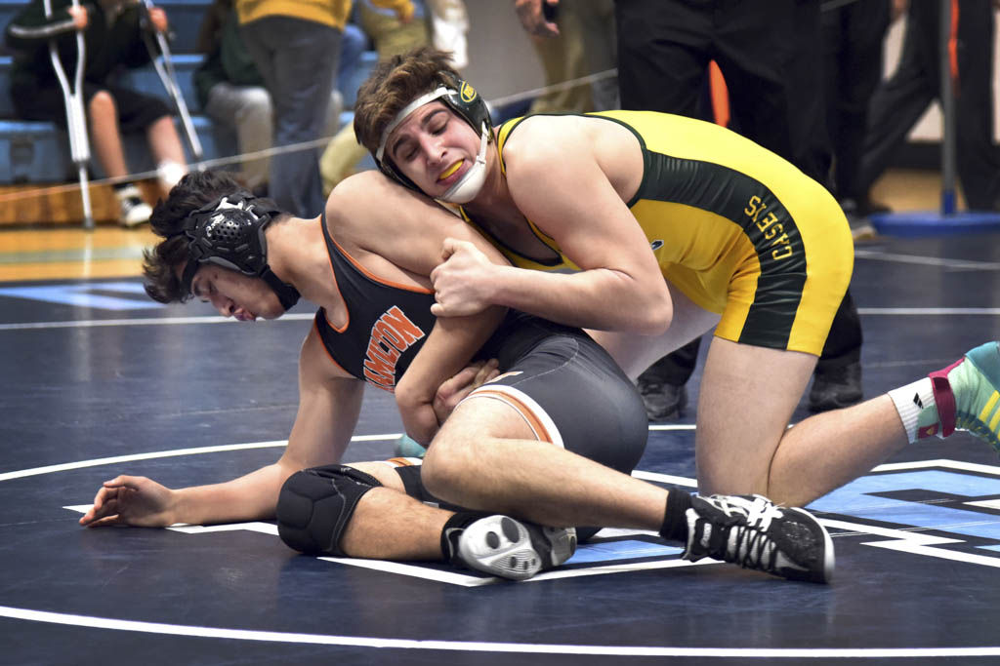
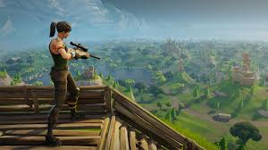
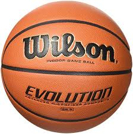

My Top 3 Hobbies
Wrestling
I've started wrestling my freshmen year at Hamilton High West. I wasn't expecting much of it,
I only did it because the basketball coach accidently cut me and because my brother did wrestling and so did my dad.
Wrestling really became a big part in my life, it pushes you to your limit. It makes your mentally strong and physically.
I would definitly make my son do wrestling.

Fortnite
I believe im one of the best fortnite players in the school. my playing style is very strong, i always pay attention to my positions when it has my absolute attention.
I see how i could get a advantage over the player or team im about to face. To gain height control or when having a building war, how to out-build him or just
go down and out-smart him. fortnite requires alot of thinking when playing good players, they are always possible ways to excape terrible positioning you get in. \
you could always find a way to survive.

Basketball
ive been playing basketball for about 5 years. I started with my friend who got me interested in it. I wanted to get better then him
so i took it pretty seriously and got alot better in a short period of time. my shot was the one thing i perfected.
but eventauly over time i lost interest in it, but i still play it now with my muslum and indian friends. we play at the mercer county park.
